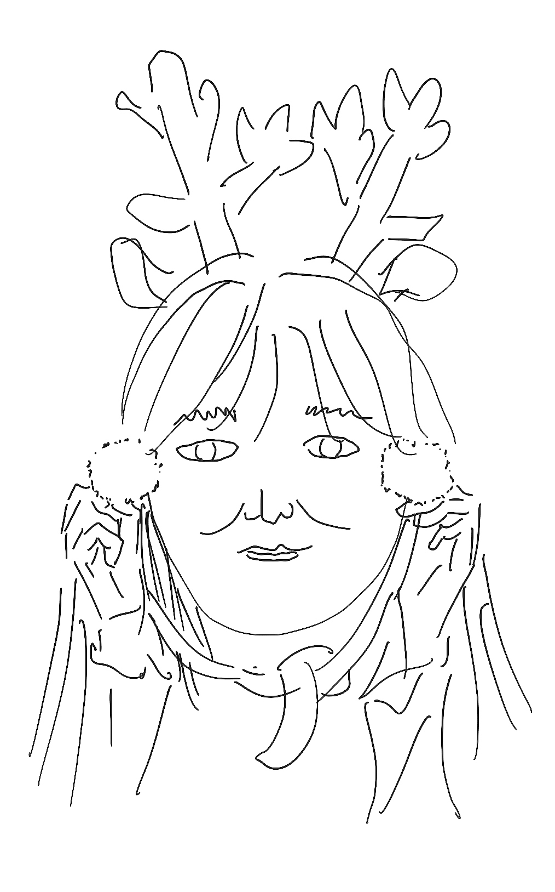

Hi, I'm Jaeyoon Song
I am a PhD student at MIT Sloan in the Information Technologies (IT) group - a subgroup of the Management Science program - where I am advised by Thomas Malone. My research area is Computer-Supported Cooperative Work (CSCW) and Social Computing, which are subfields of Human-Computer Interaction (HCI). Specifically, I am interested in understanding how new technologies change work and organizations, and building interactive systems that support collaborative interactions.
Contact me via jaeyoons@mit.edu
Experience
Jan 2021 - Present
Dec 2018 - Aug 2019
Jun 2018 - Aug 2018
Education
2021 - Present
B.A.A., Seoul National University
2016 - 2020
Updates
A paper has been conditionally accepted to CHI 2021: Online Mingling: Supporting Ad Hoc, Private Conversations at Virtual Conferences
Dec 13, 2020
The Minglr project was quoted by the Harvard Business Review in 'Successful Remote Teams Communicate in Bursts'
Oct 28, 2020
Honored to win the Science and ICT Minister’s Award at the convergence research competition held by the Convergence Research Policy Center
Oct 14, 2020
Random Fact
Jaeyoon likes Cho-dang tofu !